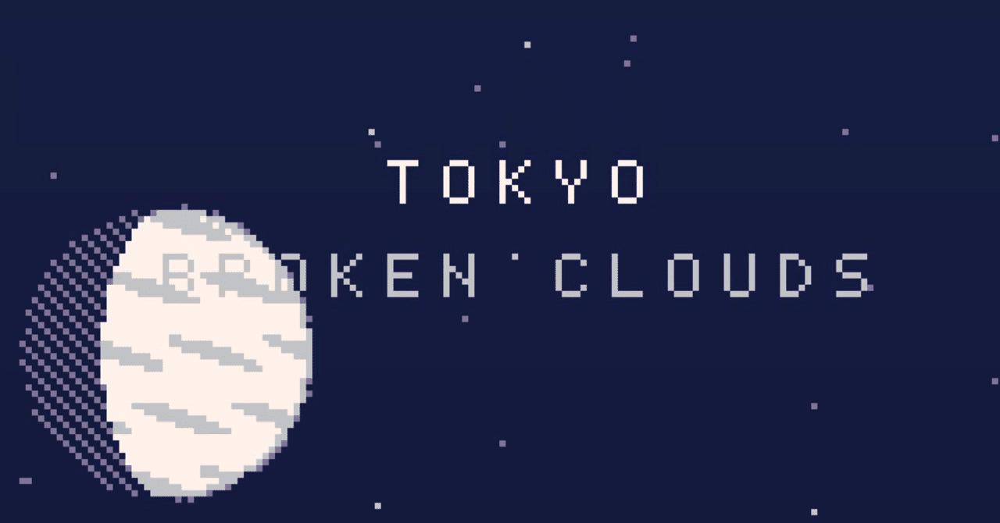
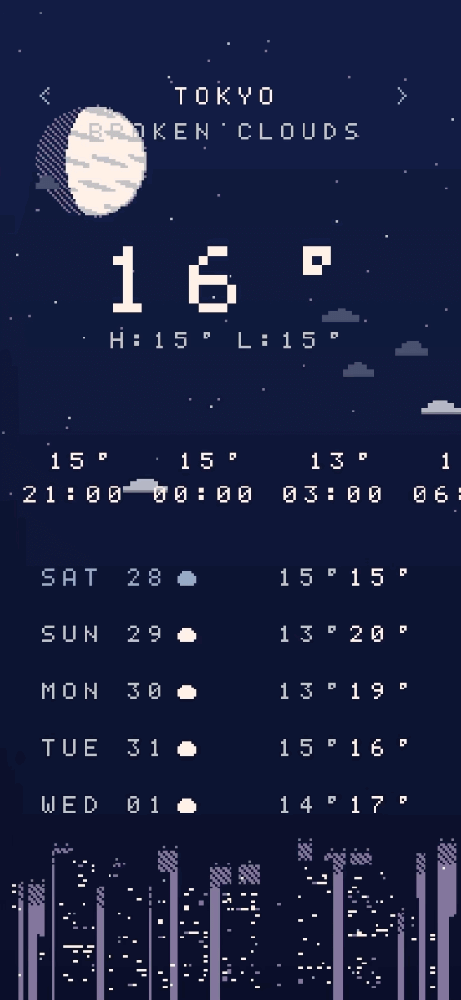
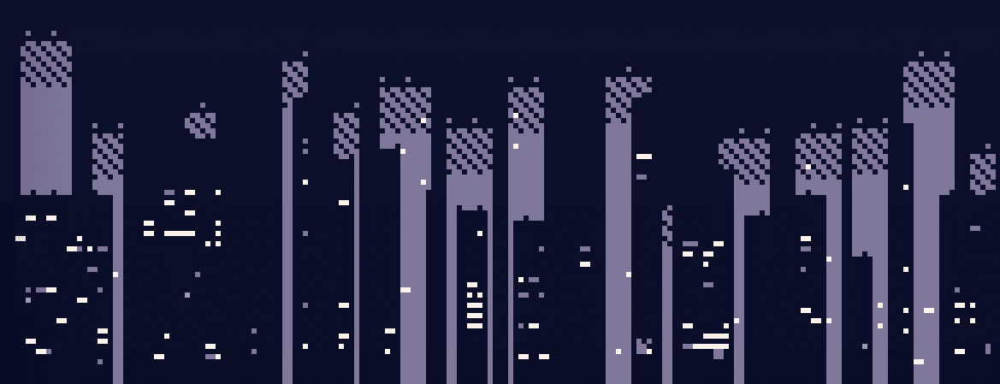
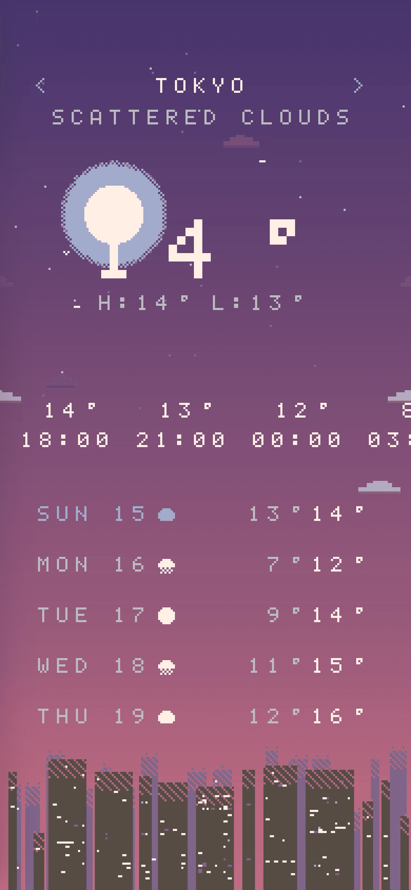
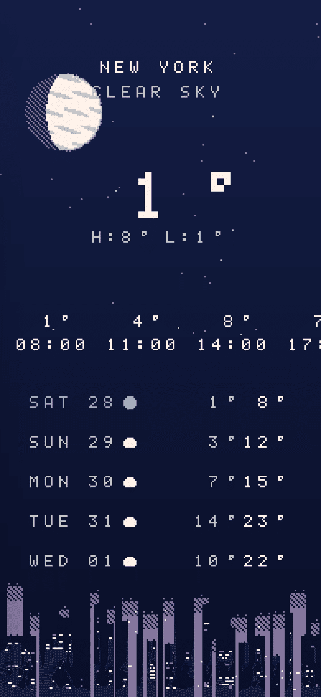
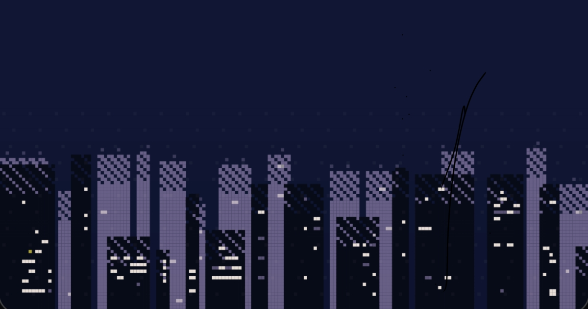

正確な天気よりも外の空気が知りたい
昔からドット絵が好きです。
限られた色と形の中で表現される世界や、
見る側に少し想像を委ねる余白に魅力を感じています。
この空気感をそのまま動かしてみたいと思い、
ドット絵で空と街を描く天気アプリ「DotWeather」を作りました。
実用的な天気アプリを作ろうとして始めたというより、
景色を時間や天気に合わせて動かしてみたいという動機のほうが近いです。
雲が流れ、空の色がゆっくり変わる。
その下に、街のシルエットが静かに残る。
天気を数値ではなく、ドットの風景として眺めてみたくなりました。

ただの絵ではない街
画面の下にある街のシルエットは、固定の画像ではありません。

都市の名前をもとにして、
その街並みを自動で描いています。
「Tokyo」を選べば毎回同じ街が描かれ、
「London」を選べば、全く違う街並みになります。
ちょっとした遊び心ですが、
こういう仕組みを作るのが好きです。
ビルの窓も、時間と天気に合わせて変化します。
夜になると明かりが灯りますが、
厚い雲や嵐の日は昼間でも街が暗くなるので、
窓の明かりが少し増えるようにしています。

月のドット
このアプリを作るとき、最初に手をつけたのは「月」でした。
空に浮かぶ月は、何枚かの画像を切り替えているわけではありません。
現在の時刻から月齢を計算して、
光っている部分と影の部分をドット単位で描き分けています。
影の部分も、完全な黒にはしていません。
暗い色を市松模様のように、ほんの少しだけ残しています。
昼は鳥が飛び、夜はコウモリが飛び、
時には流れ星が流れることもあります。

主役はあくまで風景
裏側ではそんな計算をしていますが、
主役はあくまでも風景です。
中央に気温だけを表示して、
あとは空と街がその日の雰囲気を作る。
詳しい天気予報を見るなら、
もっと優秀なアプリはいくらでもあります。
それでも「DotWeather」 を開いてしまうのは、
たまに開いたときの画面の空気感が
自分の感覚に心地よく合っているからです。
天気予報を確認するというより、
天気をぼんやり眺めるためのアプリ。
それくらいの距離感で、
いまも iPhoneの中に静かに残っています。
【20 / 21】

DotWeather